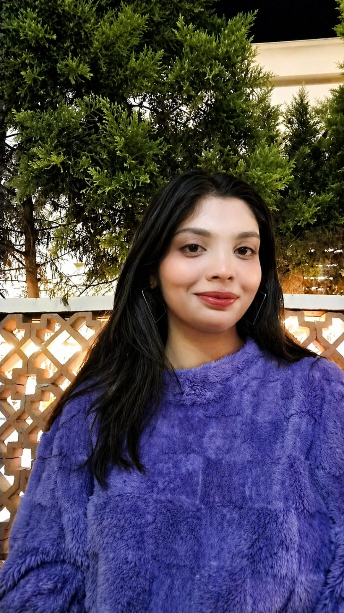

Falak Sameer Shaikh
Cybersecurity student building tools for log analysis, threat detection, web security testing, and digital forensics. AI is used only as a supporting tool to enhance security workflows.

Cybersecurity-first projects.
Practical tools around SIEM, VAPT, log analysis, forensics, security learning, and real deployment experience.
Built for practical security work.
Security investigation, vulnerability assessment, automation, and readable reporting.
Cybersecurity
Technical
AI Support
Building useful tools, not only demos.
Focused on building real-world cybersecurity tools that solve practical problems instead of only theoretical concepts. Main interests include security logs, vulnerability scanning, threat reporting, digital forensics, and beginner-friendly security investigation workflows.
Experience & Highlights
Let’s connect.
Open to cybersecurity internships, project collaborations, security tool ideas, and technical opportunities.